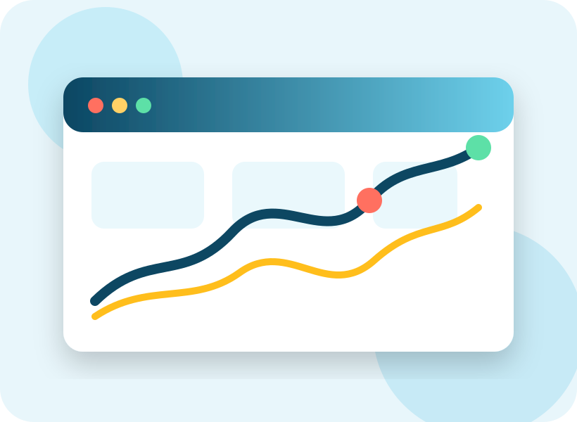

Análisis económico claro y estratégico
Diagnóstico financiero económico
Evalúa la situación real de una empresa mediante indicadores financieros, análisis económico, liquidez, rentabilidad, endeudamiento y gestión. Una mirada clara para detectar problemas, oportunidades y acciones de mejora.

360°Visión económica
+45%Claridad decisional
Explora rápido
Áreas principales del diagnóstico
Un diagnóstico no es solo mirar números: es entender cómo se comporta la empresa, qué riesgos enfrenta y qué decisiones necesita tomar.
Análisis rápido
Asesoría financiera
Reportes detallados
Planificación
Contenido audiovisual
Una mirada a nuestras finanzas
Videos integrados para reforzar la explicación visual del diagnóstico, los mercados y el análisis económico.
Detectar riesgos
Permite reconocer problemas de liquidez, exceso de deuda, baja rentabilidad o gastos mal controlados antes de que se conviertan en crisis.
Interpretar resultados
Convierte datos contables en información útil para explicar la salud económica y financiera de una organización.
Planificar mejoras
Ayuda a definir acciones concretas para optimizar costos, márgenes, ventas, recursos y sostenibilidad.